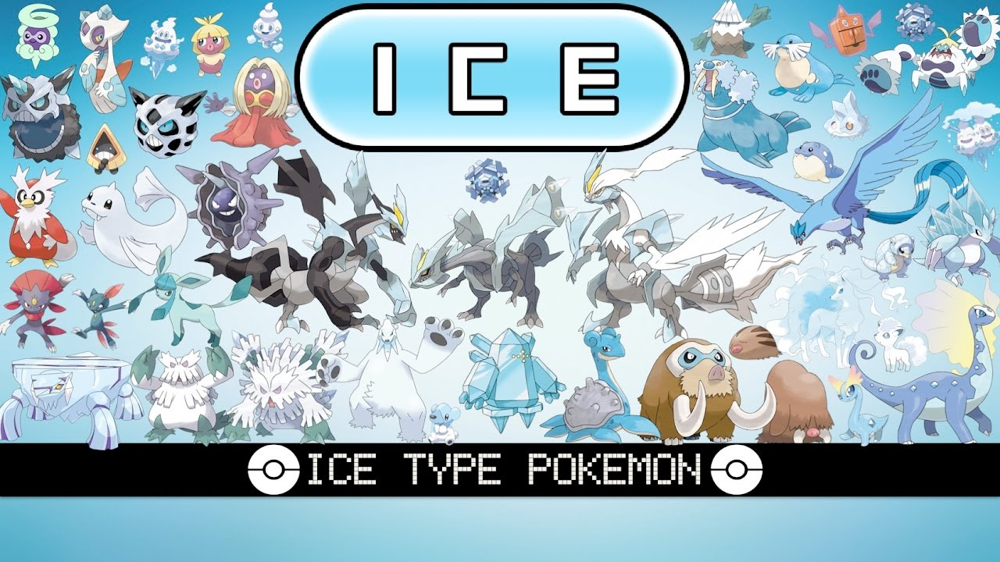

ICE-TYPE POKEMON
Ice-type Pokémon, known for their frosty demeanor and chilling powers, inhabit regions of extreme cold, often atop snowy mountains or within icy caves. Their affinity for freezing temperatures makes them resilient in frigid climates, their crystalline bodies adapted to withstand subzero conditions. Among these Pokémon, the majestic Lapras stands out, its gentle nature contrasting with its formidable strength. Resembling a prehistoric creature, Lapras glides gracefully through icy waters, its thick hide protecting it from the biting cold. Its ability to ferry trainers across frozen expanses has made it a beloved companion in regions prone to heavy snowfall. Another iconic Ice-type Pokémon is Articuno, a legendary bird revered for its beauty and power. With wings that shimmer like frost in the sunlight, Articuno commands the very essence of winter. Legends speak of its ability to create blizzards with a mere flap of its wings, blanketing entire landscapes in snow and ice. Its presence inspires awe and reverence among those who encounter it, as it embodies the unforgiving yet breathtaking nature of the icy wilderness. In contrast to the elegance of Lapras and the majesty of Articuno, there are Pokémon like Glalie and Froslass, whose icy visages strike fear into the hearts of those who dare to challenge them. Glalie, with its menacing glare and jagged ice fangs, embodies the raw power of the frozen tundra. Its icy breath can freeze anything it touches, trapping opponents in solid blocks of ice. Froslass, on the other hand, is a spectral Pokémon known for its haunting beauty and deadly allure. Legends tell of lost travelers lured to their demise by Froslass's ethereal voice, only to be frozen solid by its icy embrace. Despite their formidable powers, Ice-type Pokémon face challenges in battle due to their weaknesses to Fire, Fighting, Rock, and Steel-type attacks. However, their resilience and adaptability in harsh environments make them invaluable allies to trainers who venture into icy territories. With their icy breath and frosty powers, Ice-type Pokémon continue to captivate the imaginations of trainers and researchers alike, reminding us of the beauty and danger that lie beyond the snow-capped peaks and frozen landscapes of the Pokémon world.
